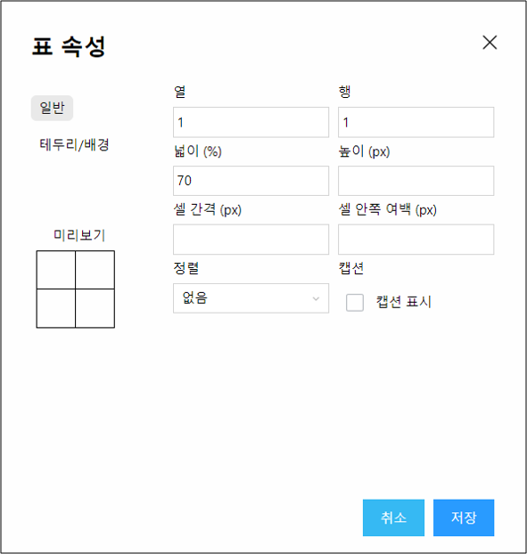
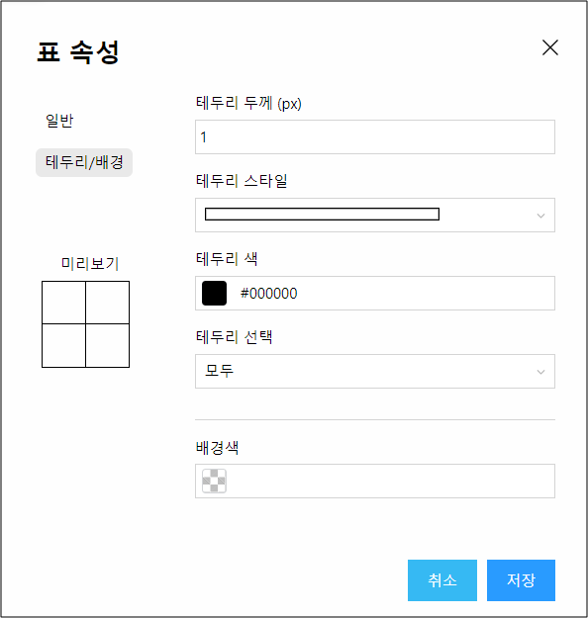
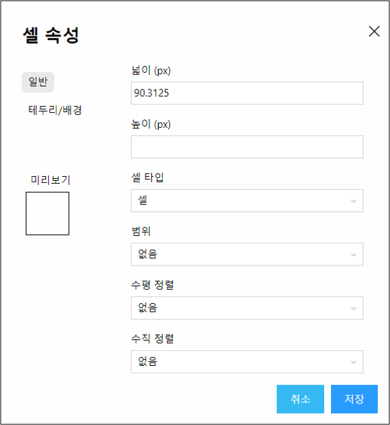
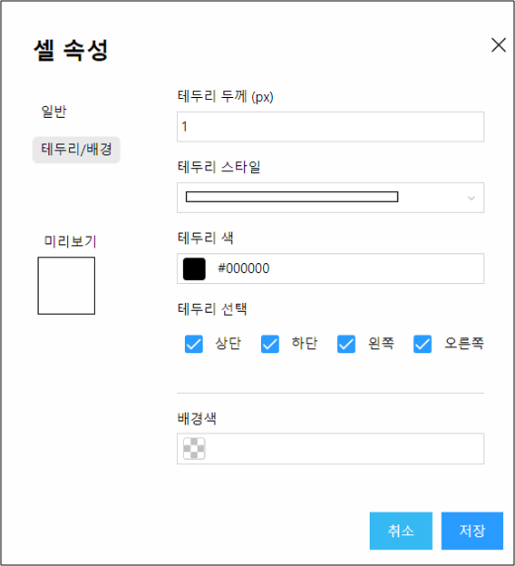
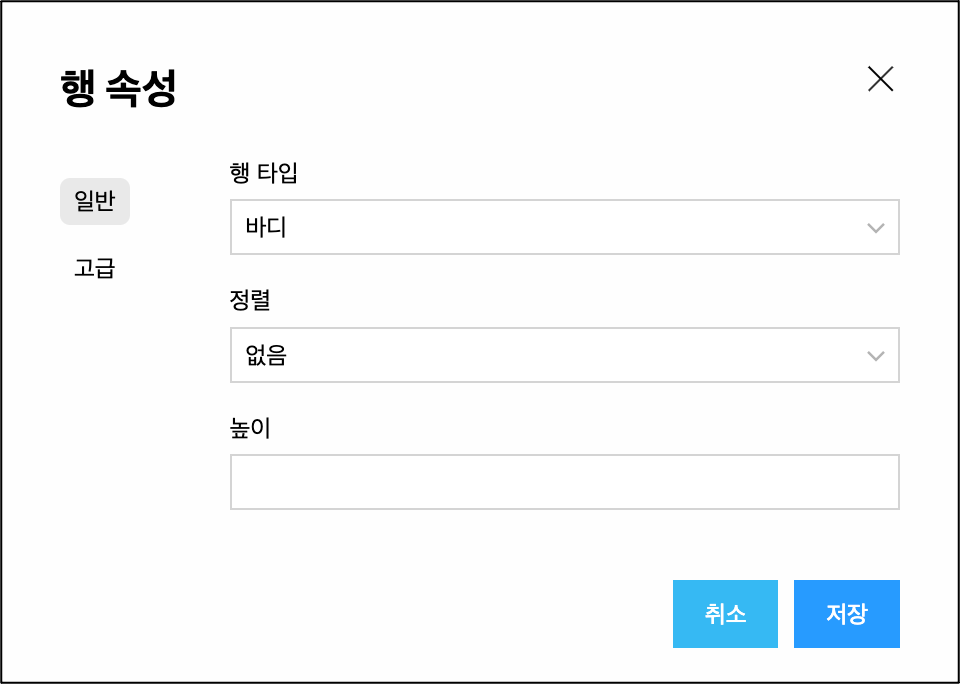
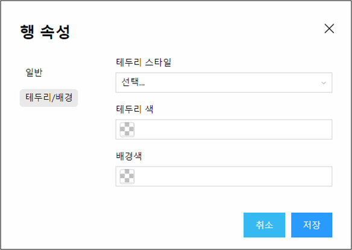
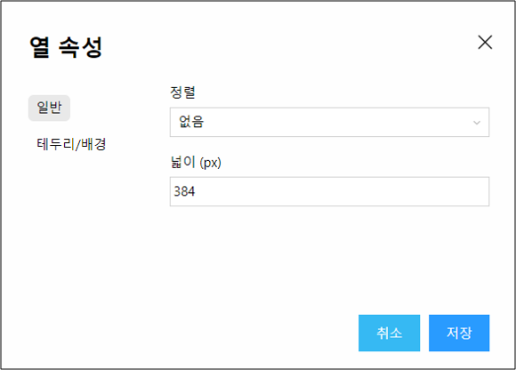
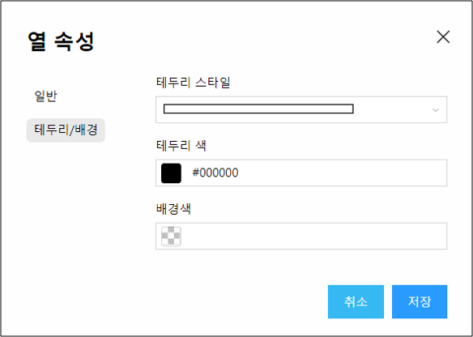
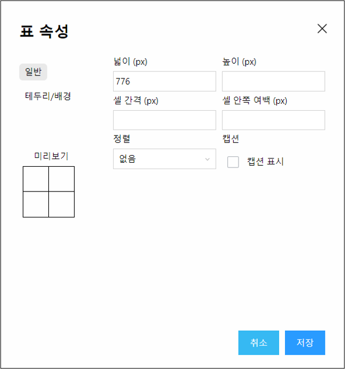
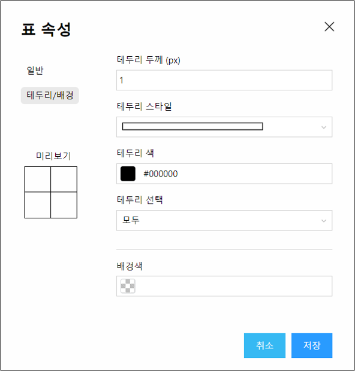

Covision WEB Editor
표
표 삽입
새로운 표를 삽입합니다.

- - [표속성>일반] 열/행 : 열과 행 개수를 지정할 수 있습니다.
- - [표속성>일반] 넓이(%)/높이(px) : 넓이(가로)와 높이(세로)를 지정할 수 있습니다.
- - [표속성>일반] 셀 간격(px) / 셀 안쪽여백(px) : 셀 간격, 셀 안쪽 여백을 지정할 수 있습니다.
- - [표속성>일반] 정렬 : 표의 위치를 왼쪽, 가운데, 오른쪽으로 위치시킬 수 있습니다.
- - [표속성>일반] 캡션 표시 : 테이블 위에 캡션을 넣을 수 있게 합니다.

- - [표속성>테두리/배경] 테두리 두께 / 테두리 스타일 / 테두리 색 : 테두리 두께, 스타일, 색깔을 지정할 수 있습니다.
- - [표속성>테두리/배경] 테두리 선택 : 테두리 선택은 모두, 테두리(바깥쪽), 안쪽을 선택할 수 있으며 고급 옵션에서 세부사항을 지정할 수 있습니다.
- - [표속성>테두리/배경] 배경색 : 표의 배경색을 지정할 수 있습니다.
표 선택
현재 커서가 위치해 있는 표 전체가 선택됩니다.

셀
- - 셀 선택 : 커서가 위치해 있는 셀 전체가 선택됩니다.
- - 셀 속성 : 커서가 위치해 있는 셀 속성을 설정합니다.

- - [셀속성>일반] 넓이 / 높이 : 넓이(가로) 높이(세로)를 설정할 수 있습니다. (px단위)
- - [셀속성>일반] 셀 타입 : 셀의 타입을 ‘셀’ 또는 ‘헤더’ 셀로 설정할 수 있습니다.
- - [셀속성>일반] 범위 : 셀의 scope 속성을 row, col, rowgroup, colgroup로 설정할 수 있습니다.
- - [셀속성>일반] 수평 정렬 : 셀의 text-align 속성을 left, center, right로 설정할 수 있습니다.
- - [셀속성>일반] 수직 정렬 : 셀의 vertical-align 속성을 top, center, bottom로 설정할 수 있습니다.

- - [셀속성>테두리/배경] 셀의 ‘테두리 두께’, ‘테두리 스타일’, ‘테두리 색상’, 셀의 배경색을 설정할 수 있습니다.
- - [셀속성>테두리/배경] 테두리 속성은 테두리 선택 체크박스에 체크된 부분에만 적용됩니다.
- - 셀 합치기 : 두 개 이상의 셀이 선택되어 있을 경우 활성화 되며 선택된 셀들이 하나로 합쳐집니다.
- - 셀 나누기 : 합쳐진 셀에 커서가 위치하면 활성화 되며 합치기 전의 셀 개수로 나누어 집니다.
행
- - 행 선택 : 커서가 위치해 있는 행 전체를 선택합니다.
- - 이전에 행 삽입 : 커서가 위치한 행의 이전 행에 새로운 행을 삽입합니다.
- - 다음에 행 삽입 : 커서가 위치한 행의 다음 행에 새로운 행을 삽입합니다.
- - 행 지우기 : 커서가 위치한 행을 삭제 합니다.
- - 행 속성 : 커서가 위치한 행의 속설을 설정합니다.

- - [행속성>일반] 행 타입 : 헤더: thead, 바디: tbody, 푸터: tfoot 로 설정할 수 있습니다.
- - [행속성>일반] 정렬 : text-align 속성을 left, center, right로 설정할 수 있습니다.
- - [행속성>일반] 높이(height)를 설정할 수 있습니다.

[행속성>테두리/배경] 테두리의 스타일, 색상, 배경색을 설정할 수 있습니다.
- - 행 잘라내기 : 커서가 위치한 행을 잘라냅니다.
- - 행 복사 : 커서가 위치한 행을 복사합니다.
- - 이전에 행 붙여넣기 : 행 잘라내기 혹은 행복사를 한 경우에 메뉴가 활성화 되며 행 잘라내기나 행복사로 보관되어 있는 행을 커서가 위치한 행의 이전행에 삽입합니다.
- - 다음에 행 붙여넣기 : 행 잘라내기 혹은 행복사를 한 경우에 메뉴가 활성화 되며 행 잘라내기나 행복사로 보관되어 있는 행을 커서가 위치한 행의 다음행에 삽입합니다.
열
- - 열 선택 : 커서가 위치해 있는 열 전체를 선택합니다.
- - 이전에 열 삽입 : 커서가 위치한 열의 이전열에 새로운 열을 삽입합니다.
- - 다음에 열 삽입 : 커서가 위치한 열의 다음열에 새로운 열을 삽입합니다.
- - 열 지우기 : 커서가 위치한 열을 삭제 합니다.
- - 열 속성 : 커서가 위치한 열의 속성을 설정합니다.

- - [일반] 정렬 : text-align 속성을 left, center, right로 설정할 수 있습니다.
- - [일반] 넓이(width)를 설정할 수 있습니다.

[테두리/배경] 테두리의 스타일, 색상, 배경색을 설정할 수 있습니다.
- - 열 잘라내기 : 커서가 위치한 열을 잘라냅니다.
- - 열 복사 : 커서가 위치한 열을 복사합니다.
- - 이전에 열 붙여넣기 : 열 자라내기 혹은 열복사를 한 경우에 메뉴가 활성화 되며 열 잘라내기나 열복사로 보관되어 있는 열을 커서가 위치한 열의 이전열에 삽입합니다.
- - 다음에 열 붙여넣기 : 열 자라내기 혹은 열복사를 한 경우에 메뉴가 활성화 되며 열 잘라내기나 열복사로 보관되어 있는 열을 커서가 위치한 열의 다음열에 삽입합니다.
셀 크기 조정
- - 너비를 같게 : 선택된 셀의 너비를 같게 합니다.
- - 높이를 같게 : 선택된 셀의 높이를 같게 합니다.
- - 너비/높이를 같게 : 선택된 셀의 너비와 높이를 같게 합니다.
표 들여쓰기
- 표 전체가 왼쪽으로 20px 이동합니다.
표 내어쓰기
- 표 전체가 오른쪽으로 20px 이동합니다.
표를 텍스트로 변환
- 표에 입력한 텍스트 내용 전체를 하나의 p tag에 넣어서 텍스트로 표시합니다. 표는 삭제 됩니다.
문단 삽입
- 위쪽 : 표의 위쪽에 p tag가 삽입되어 문장을 입력할 수 있도록 합니다.
- 아래쪽 : 표의 아래쪽에 p tag가 삽입되어 문장을 입력할 수 있도록 합니다.
표 속성
- 표의 속성값을 설정할 수 있습니다.

- - [일반] 넓이(가로)와 높이(세로) 길이를 지정할 수 있습니다.
- - [일반] 셀 간격, 셀 안쪽 여백을 지정할 수 있습니다.
- - [일반] 정렬 : 표의 위치를 왼쪽 가운데 오른쪽으로 정렬할 수 있습니다.

- - [테두리/배경] 테두리/배경 옵션에서 세부사항을 지정할 수 있습니다.
- - [테두리/배경] 테두리 두께, 테두리 스타일, 테두리 색상, 배경색을 지정할 수 있습니다.
- - [테두리/배경] 테두리 선택은 모두, 테두리(바깥쪽), 안쪽을 선택할 수 있습니다.
- - 표 속성 설정이 완료된 후 [저장] 버튼을 클릭하면 설정된 형식으로 표의 속성이 변경됩니다.
표 삭제
- 현재 커서가 위치해 있는 표가 삭제됩니다.
수직 정렬
- - 커서가 위치한 셀의 td tag의 vertical-align 속성을 변경합니다.
- - 위쪽 정렬 : vertical-align 속성값을 top로 변경합니다.
- - 가운데 정렬 : vertical-align 속성값을 middle로 변경합니다.
- - 기준선 정렬 : vertical-align 속성값을 baseline로 변경합니다.
- - 아래쪽 정렬 : vertical-align 속성값을 bottom로 변경합니다.
계산식
- - 표의 각 셀에 입력되어 있는 값을 계산할 때 사용합니다.
- - 가로 합계 : 현재 커서가 위치한 셀에 커서의 앞쪽 셀 값을 모두 더한 값을 표시합니다.
- - 세로 합계 : 현재 커서가 위치한 셀에 커서의 위쪽 셀 값을 모두 더한 값을 표시합니다.
- - 가로 평균 : 현재 커서가 위치한 셀에 커서의 앞쪽 셀의 평균값을 표시합니다.
- - 세로 평균 : 현재 커서가 위치한 셀에 커서의 위쪽 셀의 평균값을 표시합니다.